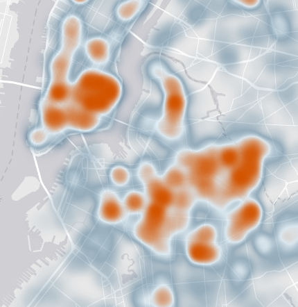
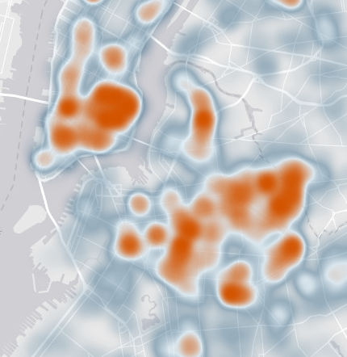

Ratmap
A simple web application that allows users to view and explore rat sightings in NYC
public service announcement
A markdown version of this presentation is available at Some link
Data
- NYC Dept of Environmental Protection 311 Service Requests from 2010 to present
- Updated daily
- Accessed using Socrata's Open Data API (SODA)
- Easy access of data and usage of filters, queries, and aggregation
http://data.cityofnewyork.us/resource/3q43-55fe?$limit=10000Technology
- Angular
- Leaflet (with plugins)
- Bootstrap
- Bower
- Gulp
Design
- Visualization appearance
- User interaction
- Overall page presentation
Visualization appearance
Change tile layer for cleaner display
http://esri.github.io/esri-leaflet

Visualization appearance
Cluster markers for faster analysis & cleaner display
Visualization appearance
Custom heatmap colors
https://github.com/Leaflet/Leaflet.heat
 

User interaction
|

|
Overall page
- Colors
- Fonts
- Responsiveness
Lessons Learned
Keep it simple
Design matters. Luckily you don't have to be an amazing designer.
Don't judge a book by a cover, but do judge an app by its name.
Ongoing work
Pull requests! Fork! Learn!